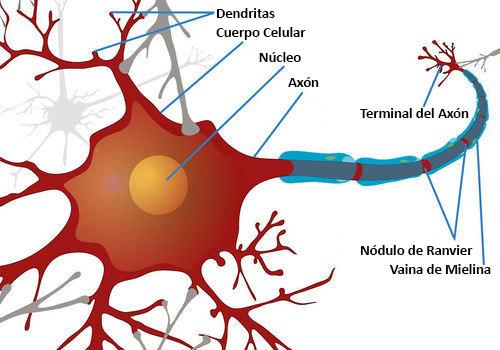
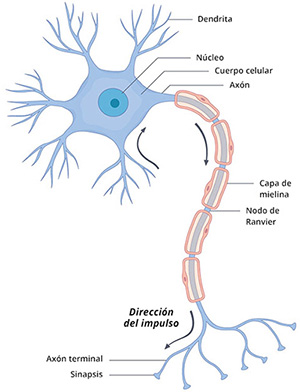
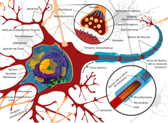
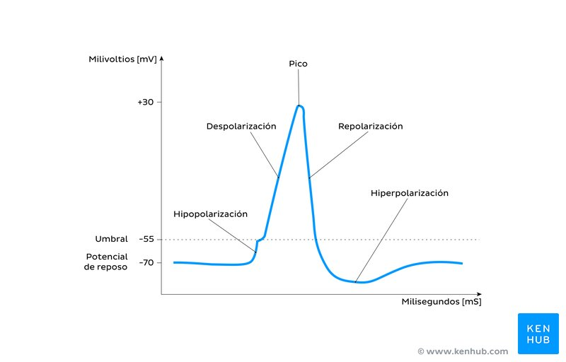
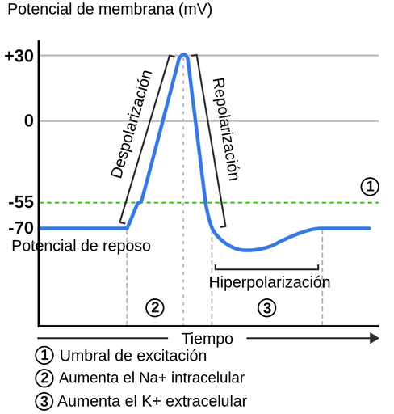
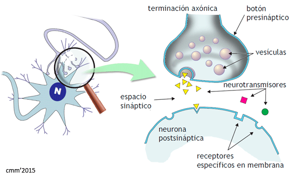
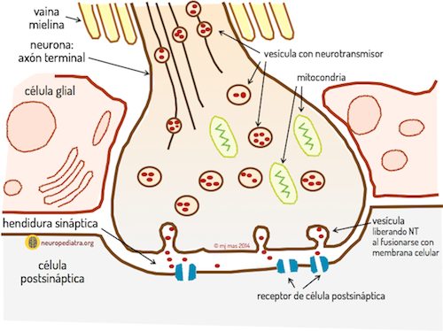

🧠 ¿Qué es el Impulso Nervioso?
El impulso nervioso es una señal eléctrica que viaja a lo largo de las neuronas (células nerviosas) y permite la comunicación entre diferentes partes del cuerpo. Es el lenguaje interno del sistema nervioso: gracias a él puedes mover un dedo, sentir el calor de una llama, recordar tu nombre o latir el corazón sin pensarlo.
Este impulso no es como la corriente de un cable de cobre. Es un fenómeno bioeléctrico basado en el movimiento controlado de iones (partículas cargadas) a través de la membrana celular de la neurona. Cuando una neurona se activa, genera un potencial de acción: una onda eléctrica que recorre su axón a velocidades que pueden superar los 120 metros por segundo.
🎯 Objetivos de Aprendizaje
Al finalizar este tema serás capaz de: describir la estructura de una neurona y la función de cada parte, explicar cómo se genera un potencial de acción, diferenciar entre potencial de reposo y potencial de acción, comprender el proceso de la sinapsis y el papel de los neurotransmisores, y relacionar el impulso nervioso con las funciones del sistema nervioso.
🔬 La Neurona: La Célula de la Comunicación
La neurona es la unidad básica del sistema nervioso. El cerebro humano contiene aproximadamente 86,000 millones de neuronas, cada una conectada con otras miles mediante sinapsis. A diferencia de otras células, las neuronas están especializadas en recibir, procesar y transmitir información.

Figura 1: Estructura de una neurona con sus partes principales etiquetadas. Fuente: CK-12 Foundation.

Figura 2: Diagrama detallado de la neurona con botones sinápticos y nódulos de Ranvier. Fuente: NeuroMéxico.

Figura 3: Neurona con ampliación de la sinapsis y estructura interna del axón. Fuente: Wikipedia.
Partes de la Neurona
🌿 Dendritas
Prolongaciones ramificadas que reciben señales de otras neuronas. Su forma de árbol maximiza la superficie de contacto con otras células nerviosas.
🏠 Soma (Cuerpo Celular)
Contiene el núcleo y los orgánulos. Es la "fábrica" de la neurona, donde se sintetizan proteínas y neurotransmisores. Su diámetro varía entre 4 y 100 μm.
📡 Axón
Prolongación larga y única que transmite el impulso hacia otras neuronas. Puede medir desde micrómetros hasta más de un metro (como los que van de la médula espinal a los pies).
🧈 Vaina de Mielina
Capa de lípidos formada por células de Schwann (SNP) u oligodendrocitos (SNC). Actúa como aislante eléctrico, acelerando la transmisión del impulso hasta 100 veces.
¿Sabías que...?
El axón más largo del cuerpo humano pertenece a la neurona que va desde la base de la columna vertebral hasta el dedo gordo del pie, midiendo aproximadamente 1.2 metros. En una ballena azul, el nervio ciático puede superar los 10 metros de longitud.
⚡ Potencial de Acción: La Chispa Eléctrica
El potencial de acción es el cambio rápido y transitorio del voltaje eléctrico a través de la membrana de una neurona. Es el mecanismo físico del impulso nervioso. Se genera gracias a canales iónicos (proteínas en la membrana) que permiten el paso selectivo de iones sodio (Na⁺) y potasio (K⁺).

Figura 4: Gráfica del potencial de acción con sus fases clave. Fuente: Kenhub.

Figura 5: Potencial de acción detallado con valores de voltaje y flujo de iones. Fuente: Labster.
Fases del Potencial de Acción
😴 Potencial de Reposo (-70 mV)
En estado de calma, la neurona mantiene una carga negativa en su interior gracias a la bomba Na⁺/K⁺-ATPasa, que expulsa 3 iones de sodio y introduce 2 de potasio. La membrana es impermeable al Na⁺ pero permeable al K⁺.
📈 Despolarización (de -70 a +30 mV)
Un estímulo supera el umbral de excitación (-55 mV). Los canales de Na⁺ voltaje-dependientes se abren y entra una avalancha de iones sodio. La carga interna se vuelve positiva. Esta fase dura ~1 milisegundo.
🎯 Pico (+30 mV)
El voltaje alcanza su máximo. Los canales de Na⁺ se inactivan (cierran) y los canales de K⁺ comienzan a abrirse. Es el punto de no retorno: el impulso ya no puede detenerse.
📉 Repolarización (regreso a -70 mV)
Los canales de K⁺ se abren completamente y el potasio sale masivamente de la célula, restaurando la carga negativa interna. Los canales de Na⁺ permanecen inactivos durante este tiempo.
🌀 Hiperpolarización (hasta -90 mV)
Los canales de K⁺ tardan en cerrarse, permitiendo que salga demasiado potasio. La neurona queda temporalmente menos excitable que en reposo. Esto evita que el impulso viaje hacia atrás.
¿Sabías que...?
El potencial de acción sigue el principio de "todo o nada": si el estímulo no alcanza el umbral de -55 mV, no se genera impulso. Pero si lo alcanza, el impulso siempre tiene la misma intensidad, sin importar cuán fuerte sea el estímulo. La "intensidad" de una sensación se codifica por la frecuencia de los impulsos, no por su amplitud.
🏃 Conducción del Impulso: Saltando de Nodo en Nodo
En axones mielinizados, el impulso no viaja de forma continua. Gracias a los nódulos de Ranvier —pequeños espacios sin mielina entre las células de Schwann— el impulso "salta" de un nódulo al siguiente en un proceso llamado conducción saltatoria. Esto aumenta drásticamente la velocidad y reduce el gasto energético.
| Característica | Fibras Mielinizadas | Fibras No Mielinizadas |
|---|---|---|
| Velocidad | 12 - 120 m/s | 0.5 - 2 m/s |
| Diámetro del axón | Grueso (2-20 μm) | Delgado (0.2-1 μm) |
| Tipo de conducción | Saltatoria (nódulos de Ranvier) | Continua |
| Ejemplos | Nervios motores, sensitivos | Fibras del dolor visceral, sistema autónomo |
| Color (histología) | Blanco (mucha mielina) | Gris (poca o ninguna mielina) |
¿Sabías que...?
La esclerosis múltiple es una enfermedad autoinmune en la que el sistema inmunitario ataca y destruye la vaina de mielina del SNC. Sin esta capa aislante, los impulsos nerviosos se ralentizan o se pierden, causando debilidad muscular, problemas de coordinación y alteraciones sensoriales. Curiosamente, el SNC puede regenerar algo de mielina, pero no lo suficiente para compensar el daño en esta enfermedad.
🔗 La Sinapsis: De lo Eléctrico a lo Químico
Las neuronas no se tocan directamente. Entre el final de un axón y la dendrita de la siguiente neurona existe un espacio microscópico llamado hendidura sináptica (de 20-40 nanómetros). Para cruzar este espacio, el impulso eléctrico se convierte en un mensaje químico: los neurotransmisores.

Figura 6: Estructura de la sinapsis química con sus componentes principales. Fuente: IES Abyla.

Figura 7: Detalle del botón sináptico mostrando vesículas, mitocondrias y receptores. Fuente: Neuropediatra.
Pasos de la Transmisión Sináptica
⚡ Llegada del Impulso
El potencial de acción llega al botón terminal (final del axón). La despolarización abre canales de Ca²⁺ voltaje-dependientes en la membrana presináptica.
📦 Liberación de Neurotransmisores
La entrada de calcio provoca la fusión de vesículas sinápticas con la membrana, liberando neurotransmisores al espacio sináptico por exocitosis. Cada vesícula contiene ~10,000 moléculas.
🔒 Unión a Receptores
Los neurotransmisores se unen a receptores específicos en la membrana postsináptica, como una llave en una cerradura. Esta unión abre canales iónicos, generando un potencial postsináptico (excitador o inhibidor).
🧹 Inactivación y Recaptación
Para evitar estimulación continua, los neurotransmisores son: degradados por enzimas (como la acetilcolinesterasa), recaptados por la neurona presináptica, o diluidos en el líquido intersticial. Este paso dura ~1-2 milisegundos.
Principales Neurotransmisores
- Acetilcolina (ACh): Contracción muscular, memoria, atención. Deficiencia en Alzheimer.
- Dopamina: Placer, motivación, movimiento. Relacionada con Parkinson y adicciones.
- Serotonina: Estado de ánimo, sueño, apetito. Relacionada con depresión.
- Noradrenalina: Alerta, estrés, "lucha o huida".
- GABA: Principal neurotransmisor inhibidor del cerebro. Reduce la excitabilidad.
- Glutamato: Principal neurotransmisor excitador. Aprendizaje y memoria.
- Endorfinas: Analgésicos naturales. Producen sensación de bienestar.
- Oxitocina: Vínculo social, confianza, parto y lactancia.
¿Sabías que...?
Una sola neurona puede formar hasta 10,000 sinapsis con otras neuronas. El cerebro humano contiene aproximadamente 100 billones (10¹⁴) de sinapsis. Si contaras una sinapsis por segundo, tardarías 3 millones de años en contarlas todas. Esta complejidad es lo que permite el pensamiento, la creatividad y la conciencia.
🧬 El Sistema Nervioso: La Red de Control
El impulso nervioso no existe en el vacío. Es la herramienta de trabajo de un sistema vasto y complejo que coordina todas las funciones del cuerpo. El sistema nervioso se divide en dos grandes componentes que trabajan en conjunto.
🧠 Sistema Nervioso Central (SNC)
- Cerebro: Controla pensamiento, emociones, memoria, movimiento voluntario y funciones autónomas.
- Cerebelo: Coordina el equilibrio, la postura y los movimientos finos.
- Tronco encefálico: Regula funciones vitales: respiración, latido cardíaco, presión arterial.
- Médula espinal: Conecta el cerebro con el resto del cuerpo. Reflejos espinales.
🌐 Sistema Nervioso Periférico (SNP)
- Nervios craneales (12 pares): Conectan el cerebro con cabeza, cuello y órganos sensoriales.
- Nervios espinales (31 pares): Conectan la médula espinal con el resto del cuerpo.
- Sistema somático: Controla músculos esqueléticos (movimiento voluntario).
- Sistema autónomo: Controla órganos internos (involuntario): simpático ("lucha/huida") y parasimpático ("descanso/digestión").
⚡ Velocidades del Impulso en Diferentes Nervios
Nervio ciático (motor): ~120 m/s — el más rápido del cuerpo.
Fibras de dolor rápido (Aδ): ~12-30 m/s — dolor agudo y localizado.
Fibras de dolor lento (C): ~0.5-2 m/s — dolor difuso y persistente.
Nervio óptico: ~3-6 m/s — transmisión visual.
Nervio facial: ~20-30 m/s — expresiones faciales.
⚠️ Cuando el Impulso Falla: Enfermedades del Sistema Nervioso
Alteraciones en la generación, conducción o transmisión del impulso nervioso causan algunas de las enfermedades más debilitantes. Comprender su base biológica es clave para el desarrollo de tratamientos.
| Enfermedad | Alteración en el Impulso | Síntomas Principales |
|---|---|---|
| Alzheimer | Muerte de neuronas colinérgicas; acumulación de placas amiloides | Pérdida de memoria, confusión, cambios de personalidad |
| Parkinson | Muerte de neuronas dopaminérgicas en la sustancia negra | Temblor, rigidez, bradicinesia (lentitud de movimiento) |
| Esclerosis Múltiple | Destrucción de la vaina de mielina (despelininización) | Debilidad, problemas de visión, espasticidad |
| Epilepsia | Descargas eléctricas anormales y descontroladas en el cerebro | Convulsiones, pérdida de conciencia, aura |
| Miastenia Gravis | Autoanticuerpos bloquean receptores de acetilcolina en la unión neuromuscular | Debilidad muscular, ptosis (párpado caído), disfagia |
| Neuropatía Diabética | Daño por glucosa elevada a nervios periféricos (especialmente pies) | Hormigueo, dolor ardiente, pérdida de sensibilidad |
🤯 Datos Curiosos sobre tu Sistema Nervioso
¿Sabías que...?
Tu cerebro genera aproximadamente 20 vatios de energía eléctrica —suficiente para encender una bombilla LED pequeña. Aunque representa solo el 2% de tu peso corporal, consume el 20% de la energía y el oxígeno de todo tu cuerpo.
¿Sabías que...?
La señal más rápida que viaja por tu cuerpo no es el dolor: es el reflejo de estornudo, que involucra el nervio trigémino y puede alcanzar velocidades de ~150 m/s. Es tan rápido que tu cerebro ni siquiera tiene tiempo de "autorizarlo" —por eso no puedes evitar estornudar.
¿Sabías que...?
El tiempo de reacción humano promedio a un estímulo visual es de 250 milisegundos. De esos 250 ms, solo ~50 ms se dedican a que la luz viaje desde el ojo hasta el cerebro. El resto (~200 ms) es el tiempo que tu cerebro necesita para "procesar" la información y decidir una respuesta.
¿Sabías que...?
Las medusas fueron los primeros animales en desarrollar un sistema nervioso hace ~700 millones de años. Sin embargo, no tienen cerebro: su sistema nervioso es una red difusa de neuronas distribuidas por todo el cuerpo. Aun así, pueden detectar luz, orientarse y cazar presas.
📝 Verifica tu Aprendizaje
Responde estas preguntas para comprobar lo que has aprendido. (Las respuestas se mostrarán al hacer clic)